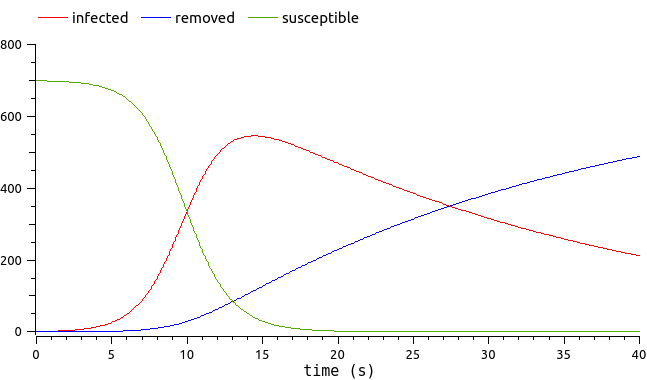

Note
Go to the end to download the full example code.
Metamodel a FMU time-dependent output#
We are interested in the evolution of an epidemic through a population (for instance, Covid!). We have an epidemiologic model describing the epidemic dynamics. More precisely, we focus on the evolution of the number of people infected by the disease.
{kind=link}
See the epidemiological model here.
To decrease the model simulation costs, let’s create a metamodel.
Metamodeling a model which output depends on time is a difficult problem. We will combine two methods: Karhunen-Loeve dimension reduction should precede the Kriging metamodeling.
We will proceed the following way:
simulate the FMU n times on a design of experiment,
concentrate the information of the time-dependent output via Karhunen-Loeve,
metamodel the Karhunen-Loeve coefficients.
The composition of the coefficients metamodel with the inverse Karhunen-Loeve will make the global metamodel.
Create the metamodel#
We load the FMU as a FMUPointToFieldFunction (see the
tutorial). We concentrate
on the first time unit of the epidemiological model output. The single
uncertain input of the model is the ìnfection_rate.
import otfmi.example.utility
import openturns as ot
import openturns.viewer as viewer
path_fmu = otfmi.example.utility.get_path_fmu("epid")
mesh = ot.RegularGrid(0.0, 0.05, 20)
meshSample = mesh.getVertices()
function = otfmi.FMUPointToFieldFunction(
mesh,
path_fmu,
inputs_fmu=["infection_rate"],
outputs_fmu=["infected"],
start_time=0.0,
final_time=1.0,
)
We create a Monte-Carlo design of experiment, on which we simulate the FMU. The simulation inputs and outputs will be used to train the metamodel.
inputLaw = ot.Uniform(0.001, 0.01)
inputSample = inputLaw.getSample(30)
outputFMUSample = function(inputSample)
graph = outputFMUSample.draw().getGraph(0, 0)
graph.setTitle("FMU simulations")
graph.setXTitle("Time")
graph.setYTitle("Number of infected")
graph.setLegends(["{:.3f}".format(line[0]) for line in inputSample])
view = viewer.View(graph, legend_kw={"title": "infection rate", "loc": "upper left"})
view.ShowAll()
We define a function to visualize the upcoming Karhunen-Loevem modes.
def drawKL(scaledKL, KLev, mesh, title="Scaled KL modes"):
graph_modes = scaledKL.drawMarginal()
graph_modes.setTitle(title + " scaled KL modes")
graph_modes.setXTitle("$x$")
graph_modes.setYTitle(r"$\sqrt{\lambda_i}\phi_i$")
data_ev = [[i, KLev[i]] for i in range(scaledKL.getSize())]
graph_ev = ot.Graph()
graph_ev.add(ot.Curve(data_ev))
graph_ev.add(ot.Cloud(data_ev))
graph_ev.setTitle(title + " KL eigenvalues")
graph_ev.setXTitle("$k$")
graph_ev.setYTitle(r"$\lambda_i$")
graph_ev.setAxes(True)
graph_ev.setGrid(True)
graph_ev.setLogScale(2)
bb = graph_ev.getBoundingBox()
lower = bb.getLowerBound()
lower[1] = 1.0e-7
bb = ot.Interval(lower, bb.getUpperBound())
graph_ev.setBoundingBox(bb)
return graph_modes, graph_ev
We compute the Karhunen-Loeve decomposition of the model outputs. The underlying assumption is that these outputs are realizations of a stochastic process.
threshold = 0.0001
algoKL = ot.KarhunenLoeveSVDAlgorithm(outputFMUSample, threshold)
algoKL.run()
resultKL = algoKL.getResult()
Let be curious and plot the Karhunen-Loeve modes:
phi_Y = resultKL.getScaledModesAsProcessSample()
lambda_Y = resultKL.getEigenvalues()
graph_modes_Y, graph_ev_Y = drawKL(phi_Y, lambda_Y, mesh, "Y")
view = viewer.View(graph_modes_Y)
view.ShowAll()
Now that Karhunen-Loeve algorithm is trained, we can project them in the smaller-dimension space:
projectionSample = resultKL.project(outputFMUSample)
n_mode = projectionSample.getDimension()
print("Karhunen-Loeve projection is dimension {}".format(n_mode))
Karhunen-Loeve projection is dimension 3
We keep on following our road map, by metamodeling the projection of the curves on the smaller-dimension space. We metamodel the Karhunen-Loeve coefficients using ordinary Kriging.
dim = inputSample.getDimension() # only 1 input dimension
univb = ot.ConstantBasisFactory(dim).build() # univariate basis
coll = [ot.AggregatedFunction([univb.build(i)] * n_mode) for i in range(univb.getSize())]
basis = ot.Basis(coll) # multivariate basis
covarianceModel = ot.SquaredExponential(dim)
covarianceModel = ot.TensorizedCovarianceModel([covarianceModel] * n_mode)
algo = ot.KrigingAlgorithm(inputSample, projectionSample, covarianceModel, basis)
algo.run()
result = algo.getResult()
metamodel = result.getMetaModel()
We have created all pieces for a “PointToField” metamodel. Let put these pieces together:
def globalMetamodel(sample):
emulatedCoefficients = metamodel(sample)
restoreFunction = ot.KarhunenLoeveLifting(resultKL)
emulatedProcessSample = restoreFunction(emulatedCoefficients)
return emulatedProcessSample
Validate the metamodel#
We create a new Monte-Carlo design of experiment. On this design of experiment, the FMU is simulated as well as the metamodel.
inputTestSample = inputLaw.getSample(10)
outputFMUTestSample = function(inputTestSample)
outputMetamodelTestSample = globalMetamodel(inputTestSample)
First, we have a visual check:
gridLayout = ot.GridLayout(1, 2)
graph1 = outputFMUTestSample.draw().getGraph(0, 0)
graph1.setTitle("FMU simulations")
graph2 = outputMetamodelTestSample.draw().getGraph(0, 0)
graph2.setTitle("Metamodel")
for graph in [graph1, graph2]:
graph.setXTitle("Time")
graph.setYTitle("Number of infected")
graph.setLegends(["{:.3f}".format(line[0]) for line in inputSample])
gridLayout.setGraph(0, 0, graph1)
gridLayout.setGraph(0, 1, graph2)
view = viewer.View(
gridLayout, legend_kw={"title": "infection rate", "loc": "upper left"}
)
view.ShowAll()
We validate the pertinence of Karhunen-Loeve decomposition:
validationKL = ot.KarhunenLoeveValidation(outputFMUTestSample, resultKL)
graph = validationKL.computeResidualMean().draw()
ot.Show(graph)
As the epidemiological model considers a population size of 700, the residual mean error on the field is acceptable.
We validate the Kriging (using the Karhunen-Loeve coefficients of the test sample):
projectFunction = ot.KarhunenLoeveProjection(resultKL)
coefficientSample = projectFunction(outputFMUTestSample)
validationKriging = ot.MetaModelValidation(
inputTestSample, coefficientSample, metamodel
)
Q2 = validationKriging.computePredictivityFactor()[0]
print(Q2)
0.9999949332681868
The predictivity factor is very close to 1, which is satisfying. Further statistical tests exist in OpenTURNS to assert the quality of the obtained metamodel.
The globalMetamodel (computationnally faster than the FMU) created with
the above script can now be used as a computationnally much cheaper
substitute to the FMU for
etc.
Total running time of the script: (0 minutes 1.003 seconds)